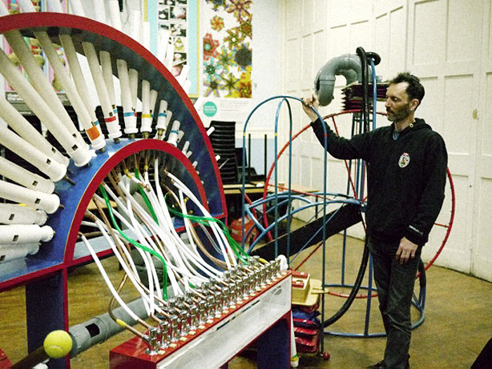
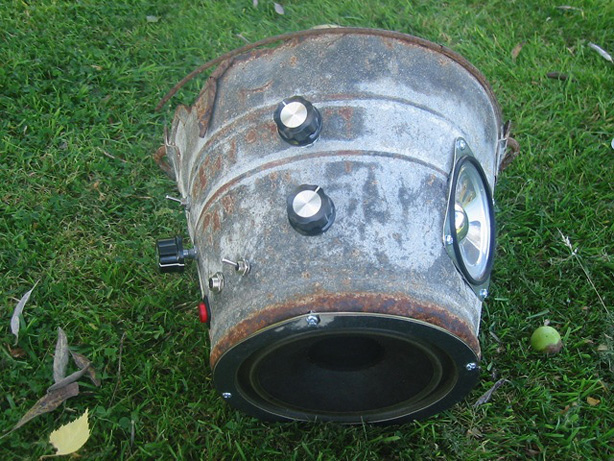

The If Wet 2014 Tour is looming large! We set off around the country on the 21st of June, for events on consecutive weekends…
The second event in the tour is at Fitzhead Tythe Barn, Somerset, 22nd June, 2-4pm – TICKETS. JOIN US.
We will kick things off as usual, demonstrating the latest work on our Giant Feedback Organ. Originally commissioned by the Southbank Centre, we have continued to develop the sounds this beast can produce and we will share these with you…
MortonUnderwood – Giant Feedback Organ
The second presentation is from a wonderful maker we met at the Southbank Centre, as part of the aforementioned commission. Jules Bushell will talk about his work on this project, known as Bushell’s Amazing Drain-O-Phone – a pedal-powered drainpipe organ – and a selection of other pieces he has worked on.

Bushell’s Amazing Drain-O-Phone
For the second presentation in Somerset we are delighted to have Hacker Farm presenting their work. They have a message for you regarding their intentions.
A few words from HACKER FARM: “When we were asked to appear at If Wet… the first thing we did was hack their web-page. But we hacked them in the nicest possible way – we temporary borrowed the HTML tags that ‘describe’ the web-page advertising the event we were asked to appear at: Fitzhead Tythe Barn, Somerset, on Sunday 22nd, June. The processing is known as ‘scraping’ because it literally scrapes information off a web-page. We took this borrowed data and ran it through an algorithmic script that creates MIDI information. MIDI stands for Musical Instrument Digital Interface – it’s a protocol for controlling synthesizers and samplers that was used a lot in the 80s and 90s. Many of your favourite classic pop records from that era were played using MIDI information. So, basically, we turned the If Wet… web-page into a tune…
“We’ll be playing that tune using a… ah, well, you’ll just have to wait and see. We will also be bringing along and demonstrating a variety of hand-built / salvaged musical-instruments, incl. the NANDIcams (chip-based synthesisers housed in Kodak Brownie cameras), a synth made from an old paraffin can along with a rusty-broken bucket – now re-envisioned as the Atari-Punk-Bucket. All of this, as well as broken/bent kids-toys and contact-mic’d plastic-instruments – will be played through our purpose-built ‘Farmyard Sound System’…

Hacker Farm – Atari-Punk-Bucket.
Well, there you have it. Somerset, eh? All being well, this will be accompanied by the usual local ale, grub and cake. JOIN US.